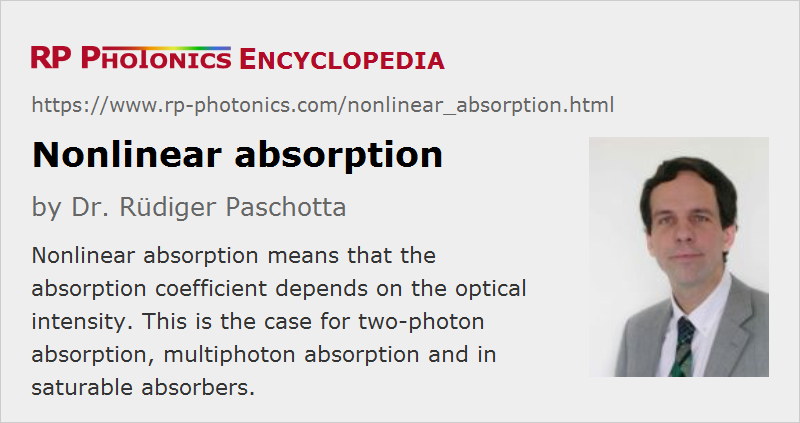

Nonlinear Absorption
Definition: absorption where the absorption coefficient depends on the optical intensity
More specific terms: two-photon absorption, multiphoton absorption, saturable absorption
Opposite terms: linear absorption
German: nichtlineare Absorption
How to cite the article; suggest additional literature
Author: Dr. Rüdiger Paschotta
In various situations, absorption processes are nonlinear; this means that the absorption coefficient depends on the optical intensity (radiant flux) – either only on the instantaneous intensity (for an instantaneous nonlinear response) or to the intensities in the near past.
In some cases, there is only nonlinear absorption and no linear absorption: the absorption coefficient vanishes for vanishing intensities. In other cases, there is absorption at low intensities, but the absorption coefficient rises or is reduced for higher intensities. The latter case (with reduced absorption coefficients for rising intensities) is called saturable absorption. It is often exploited for laser pulse generation by passive mode locking or passive Q switching.
A typical nonlinear absorption process is two-photon absorption (TPA). Here, the energies of two photons are combined to excite a single electron into a higher state – e.g. above the band gap of a semiconductor. Thus, there can be absorption (at high enough intensities) even when the energy of a single photon is insufficient for getting across the band gap. The effective absorption coefficient is proportional to the optical intensity.
Similarly, there are multiphoton absorption processes involving more than two photons per process. These are relevant, for example, for laser material processing in transparent media such as glasses. The deposition of laser energy is possible only with high peak powers as can be reached in short or ultrashort pulses of light.
Questions and Comments from Users
Here you can submit questions and comments. As far as they get accepted by the author, they will appear above this paragraph together with the author’s answer. The author will decide on acceptance based on certain criteria. Essentially, the issue must be of sufficiently broad interest.
Please do not enter personal data here; we would otherwise delete it soon. (See also our privacy declaration.) If you wish to receive personal feedback or consultancy from the author, please contact him e.g. via e-mail.
By submitting the information, you give your consent to the potential publication of your inputs on our website according to our rules. (If you later retract your consent, we will delete those inputs.) As your inputs are first reviewed by the author, they may be published with some delay.
See also: absorption, two-photon absorption, multiphoton absorption, saturable absorbers
and other articles in the category nonlinear optics
|  |
If you like this page, please share the link with your friends and colleagues, e.g. via social media:
These sharing buttons are implemented in a privacy-friendly way!